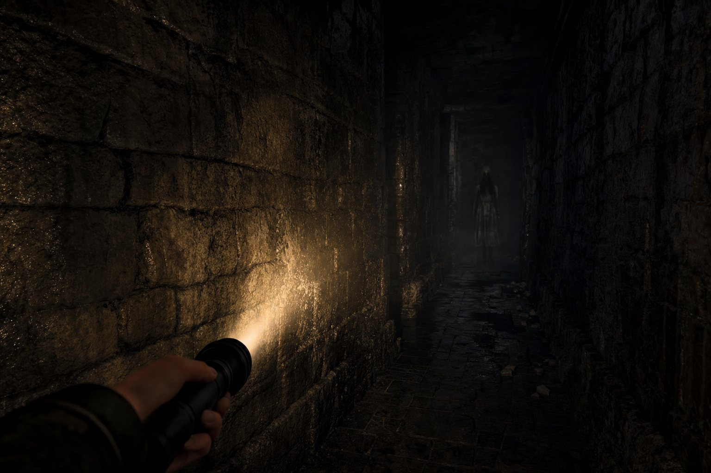

LISTEN · HIDE · ESCAPE
손전등 하나로
어둠의 미로를 빠져나가세요.
어둠의 미로는 캄캄한 3D 미로에서 보이지 않는 추격자를 피해 보물이 놓인 출구까지 가는 1인칭 공포 탈출 게임입니다. 미로는 판마다 새로 만들어지고, 소리에 귀 기울여야 살아남을 수 있어요.
이어폰 권장 · 가입 없이 · 광고 없는 무료 게임

이렇게 살아남아요
불을 켤지, 끌지가 모든 걸 정해요.
손전등을 켜면 길이 보이지만 추격자에게 들킵니다. 끄고 멈추면 안전하지만 길을 잃기 쉬워요. 이 선택을 거듭하며 출구로 향합니다.
-
손전등으로 길 찾기
손전등은 켜 둔 동안 배터리가 줄고, 끄면 천천히 다시 찹니다. 미로 곳곳의 배터리 3개를 주우면 더 오래 비출 수 있어요.
-
소리로 숨기
추격자는 거의 보이지 않아요. 발소리와 빨라지는 심장 소리로 거리를 가늠하고, 가까워지면 불을 끄고 멈춰 숨으세요.
-
보물 향해 탈출
금빛 화살표가 출구 방향을 알려 줘요. 보물에 닿으면 탈출 성공, 걸린 시간이 기록으로 남습니다.
알아 두면 좋아요
광고도 가입도 없이,
기록은 내 기기에.
어둠의 미로는 회원가입이나 로그인 없이 바로 시작합니다. 광고와 인앱결제가 전혀 없는 무료 게임이에요. 탈출 기록과 소리 설정은 기기 안에 저장되며, 앱 데이터를 지우면 함께 지워집니다.
토스 앱 안에서 즐길 때는 탈출 시간이 토스 게임센터 랭킹에 올라갑니다. 자세한 내용은 앱 안 개인정보처리방침에서 확인해 주세요.
- 분류
- 게임 · 1인칭 생존 호러
- 출시 채널
- Google Play · 앱인토스
개인정보처리방침과 이용약관은 앱이 출시된 스토어의 앱 정보와 앱 안에서 확인할 수 있습니다.
궁금할 때 먼저 보기
자주 묻는 질문
무료인가요? 광고가 나오나요?
완전히 무료입니다. 광고와 인앱결제가 없어서 플레이 중에 흐름이 끊기지 않아요.
어떻게 조작하나요?
화면 오른쪽 조이스틱으로 앞뒤로 움직이고 좌우로 돌아요. 조이스틱을 끝까지 밀면 달리고, 화면 왼쪽을 끌면 위아래를 둘러볼 수 있어요. 손전등은 왼쪽 아래 버튼으로 켜고 끕니다.
왜 이어폰을 권하나요?
추격자는 화면에 거의 보이지 않고, 발소리가 들리는 방향과 심장 소리의 빠르기로 위치를 알 수 있어요. 이어폰을 끼면 방향을 더 잘 느낄 수 있습니다.
미로는 매번 같나요?
아니요. 판을 시작할 때마다 미로의 길과 배터리 위치가 새로 만들어집니다. 길을 외우기보다 그때그때 판단해야 해요.
기록은 어떻게 남나요?
탈출에 성공한 판의 시간이 짧은 순으로 기기에 10개까지 남습니다. 토스 앱 안에서 즐기면 「전체 랭킹 보기」로 다른 이용자와 기록을 견줄 수 있어요.
어디서 할 수 있나요? 인터넷이 필요한가요?
Android 휴대폰에서는 Google Play 에서 받을 수 있고, 토스 앱 안의 미니앱으로도 즐길 수 있습니다. Google Play 앱은 인터넷 연결 없이 플레이할 수 있어요. iOS 앱은 따로 없습니다.
도움이 필요할 때
문의 안내
앱 이용에 관한 궁금한 점이나 도움이 필요한 내용을 이메일로 보내 주세요.